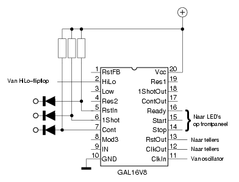

Ratatosk1 is een teller, die op een serie LED-displays aangeeft hoelang een bepaalde TTL-toestand actief was. Deze toestand kan ―naar keuze― een laag- of een hoog niveau aan zijn ingang zijn. Dit niveau kan afkomstig zijn van een digitale schakeling. Maar ―door een gepaste voorzetschakeling te gebruiken― kan zowat alles gemeten worden: de lengte van een regenbui, het aantal uren daglicht per etmaal, de capaciteit van een NiCd-cel, enz...
Vermits het display uit 10 decaden is samengesteld, kan er geteld worden van 0 tot 9.999.999.999 Met behulp van een draaischakelaar kan de snelheid waarmee geteld wordt ingesteld worden tussen 1MHz en 1Hz. Als voor de laagste snelheid gekozen wordt, duurt het meer dan 115.740 dagen voor de maximum tellerstand bereikt is; als er continu geteld wordt, welteverstaan. Voor de meeste praktische doeleinden zal dit wel toereikend zijn...
Aangezien de IC's die de telpulsen verwerken en de LED-displays aandrijven (CD4026) er zo'n 100nSec over doen om de tellerstand bij te werken, duurt het 1 μSec, vóór het ganse display de tellerstand aangepast heeft. Hierdoor is het weinig zinvol om kloksnelheden te gebruiken die hoger dan 1MHz liggen.
Teneinde Ratatosk zo universeel mogelijk te maken, zijn er
verschillende instelmogelijkheden voorzien.
Door middel van twee aanraakschakelaars kan gekozen worden uit even zoveel bedrijfsmodes.
Voorts zijn er twee aanraakschakelaars die de gebruiker de mogelijkheid geven om de lengte van een laag- danwel een hoog niveau op de ingang van Ratatosk te meten.
Om het even in welke bedrijfsmode Ratatosk opereert, hij zal nooit uit eigen beweging het display op nul zetten. Hierdoor blijft de laatst-gelezen tellerstand op het display staan. Het is hierdoor ook mogelijk verschillende metingen na mekaar te doen, waarbij het resultaat van elke meting netjes bij de vorige opgeteld wordt.
Teneinde het display op nul te zetten is er een tiptoets voorzien. Die beïnvloedt niet enkel het display, maar ook de werking van de teller. Na het loslaten van de reset-toets gebeurt het volgende:
De gebruikte LED-displays hebben een redelijke ouderdom; hun
lichtopbrengst is dan ook vrij gering. Teneinde een goede
leesbaarheid te bekomen ―ook bij sterk omgevingslicht― zijn de
LED-displays enigzins achteruit geschoven ten opzichte van het
bedieningspaneel. Dit schermt ze terdege af van
omgevingslicht.
Om energie te sparen, kan het display uitgeschakeld worden. De
overige komponenten van Ratatosk blijven ―met uitgeschakeld
display― gewoon hun werk doen.
Het kloppend hart van Ratatosk is een kant-en-klare 4MHz-oscillator. Dit type oscillators is weliswaar ook verkrijgbaar in een 1MHz-uitvoering, maar die is aanzienlijk duurder dan de CD4040, die nu gebruikt wordt om het kloksignaal door vier te delen. Na de CD4040 volgen een serie tiendelers van het type CD4017. De carry-out (CO) uitgang van iedere tiendeler is verbonden met de CLK-ingang van de volgende. Tevens is er telkens een aftakking gemaakt naar een buffer, wiens uitgang hoogohmig is als aan zijn stuuringang een hoog niveau staat. Alle stuuringangen worden ―via een weerstand― hoog gehouden. Door middel van een draaischakelaar wordt de gewenste buffer vrijgegeven.
Zoals bijgaande figuur laat zien, is er weinig nodig om
een aantal telpulsen zichtbaar te maken op een LED-display.
De CD4026 is bijzonder geschikt voor deze taak,
daar het al de nodige logica aan boord heeft.
Op pin1 komen de klokpulsen binnen. Het IC reageert
op de opgaande flank van iedere puls. De frequentie die
we op pin5 terugvinden, bedraagt 1/10e van de ingangsfrequentie.
Telkens de tellerstand van 9 naar 0 verspringt, verschijnt een
opgaande flank op pin5.
Door telkens pin5 van iedere teldecade naar pin1 van de volgende
decade door te verbinden, kunnen we de rij zo lang maken
als we willen.
Naast een deel dat de klokpulsen verwerkt, beschikt de CD4026
ook over een display-driver. Deze is geschikt om
LED-displays met een gemeenschappelijke kathode
(zoals de MAN74A) aan te sturen.
Ondanks het feit dat de stroom-begrenzende weerstanden niet
noodzakelijk zijn, werden die toch aan de schakeling toegevoegd
om zodoende de warmte-dissipatie van de IC's te beperken. De
warmteontwikkeling van de ganse schakeling is trouwens niet
gering. Vermits er tien displays aanwezig zijn, kunnen er
maximaal 70 LED's gezamenlijk oplichten. Aan 5mA per segment
komen we dan al snel op 350mA voor het totaal. Ook de trafo en
de spanningsregelaar dragen hun steentje bij, wat
warmteontwikkeling betreft. Wat extra koeling, onder de vorm van
een ventilatortje, is dan ook geen overbodige luxe.
Het kiezen van de meetfrequentie geschiedt met behulp van een draaischakelaar. Voor de overige functies zijn er tiptoetsen voorzien. Doordat zowel de HCT-serie als de GAL over hoogohmige ingangen beschikken, is het een koud kunstje deze van een tiptoets te voorzien. Het volstaat een weerstand van 10 MOhm tussen de ingang en Vcc te plaatsen, en een diode tussen ingang en tiptoets aan te brengen. Het schema hiernaast toont hoe met behulp van 2 NAND-poorten, 2 weerstanden en 2 diodes een tiptoets-flipflop kan samengesteld worden. Het Display-pritje bevat twee van dergelijke flipflops. Eén van deze flipflops schakelt het display aan en uit. Met behulp van de andere kan het te-meten niveau gekozen worden.
Daarnaast zijn er nog drie tiptoetsen voorzien, die rechtstreeks met een ingang van de GAL verbonden zijn. Twee van deze tiptoetsen geven de mogelijkheid een keuze te maken tussen éénmalig meten en continu meten. De derde tiptoets start een meting.
Voor de tiptoetsen zelf werden vergulde kontaktpinnen gebruikt, afkomstig uit een vrouwelijke D-connector.
 Het enige dat nog ontbreekt om Ratatosk tot een bruikbaar instrument te maken, is een stuk logica dat beslist wanneer (en wanneer niet) de klokpulsen worden doorgegeven aan de tellers.
Een GAL van het type 16V8 is hiervoor bijzonder geschikt. Zelfs de traagste GAL ―met een signaal-doorlooptijd van 20 nSec― is meer dan snel genoeg om met een klokfrequentie van 1MHz om te springen.
Hoofdstuk Reset laat een deel van de taken zien, die de GAL moet verrichten. De GAL-source brengt meer duidelijkheid.
GAL16V8
IDNT TelGAL
datum 27-07-1997
bestemming Ratatosk, een teller
SYN 1
AC0 1
!
RstFB Vcc
HiLo Res1
Low 1ShotOut
Res2 ContOut
RstIn Ready
1Shot Start
Cont Stop
Mod3 RstOut
IN ClkOut
GND ClkIn
; Een druk op de Reset-knop zet de teller op nul
@ RstOut AC1 1 /RstIn ; Resetten als er op de RstIn-knop gedrukt wordt
; Na een reset wacht Ready tot (IN != HiLo),
; dit om een foutieve (onvolledige) meting te vermijden.
@ Ready AC1 1 RstIn * IN * /HiLo
+ RstIn * /IN * HiLo
; Eens geaktiveerd, houdt Ready zichzelf in stand
+ Ready * RstIn
; Start wordt aktief zodra Ready hoog is, EN als (IN == HiLo)
@ Start AC1 1 RstIn * Ready * IN * HiLo ; Starten als (IN == HiLo)
+ Ready * RstIn * /IN * /HiLo
; Start houdt zichzelf in stand tot de volgende reset
+ Start * RstIn
; In de 1Shot-mode stoppen we als Start reeds aktief was, en als (IN != HiLo)
@ Stop AC1 1 Start * 1ShotOut * RstIn * IN * /HiLo
+ Start * 1ShotOut * RstIn * /IN * HiLo
; Dat blijft zo tot de volgende reset
+ Stop * RstIn
; De twee volgenden vormen een soort flipflop, waarbij 1Shot default is
@ 1ShotOut AC1 1 /1Shot
+ 1ShotOut * Cont
+ /ContOut
@ ContOut AC1 1 /Cont
+ ContOut * 1Shot
; Het kloksignaal wordt doorgegeven als Start hoog is en Stop laag
@ ClkOut AC1 1 ClkIn * Start * /Stop
#
Over de voeding valt nog het minst te zeggen. Een trafo, gevolgd
door een gelijkrichterbrug en een elco leveren een ruwe
gelijkspanning van meer dan 13Volt. Onder de trafo zijn
verbindingspunten voorzien, waarmee de meest-gepaste ruwe
spanning kan gekozen worden.
Een 7810 maakt hier een nette 10Volt van, geschikt voor de
tellers/display-drivers. De tweede regelaar ―een 7805― levert
de nodige 5Volt voor de overige IC's.
Daarnaast is er een geforceerde koeling voorzien in de vorm van
een miniatuur-ventilatortje. De reden hiervoor staat beschreven
in hoofdstuk De teller/display-drivers.
Alle layouts zijn afgedrukt op schaal 2/1.